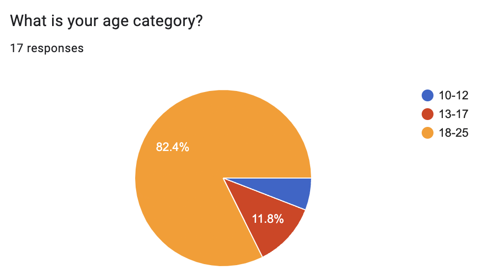
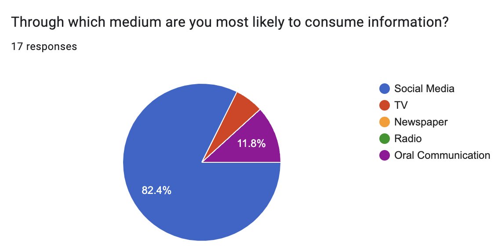
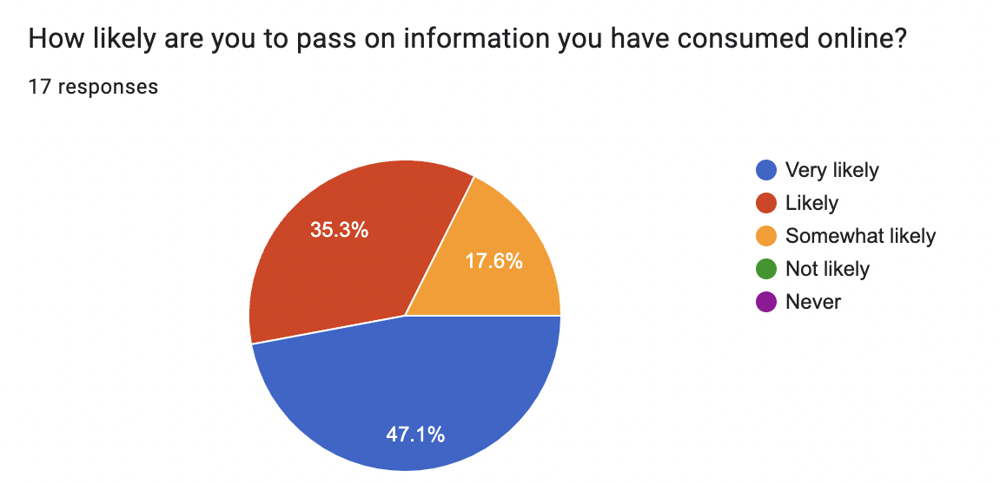
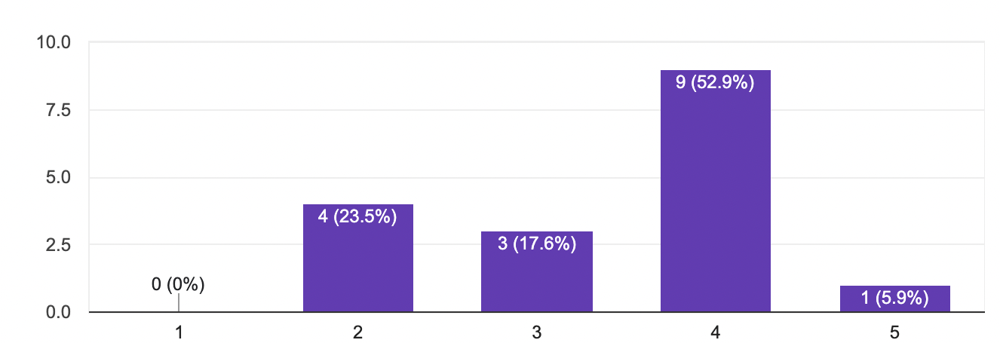
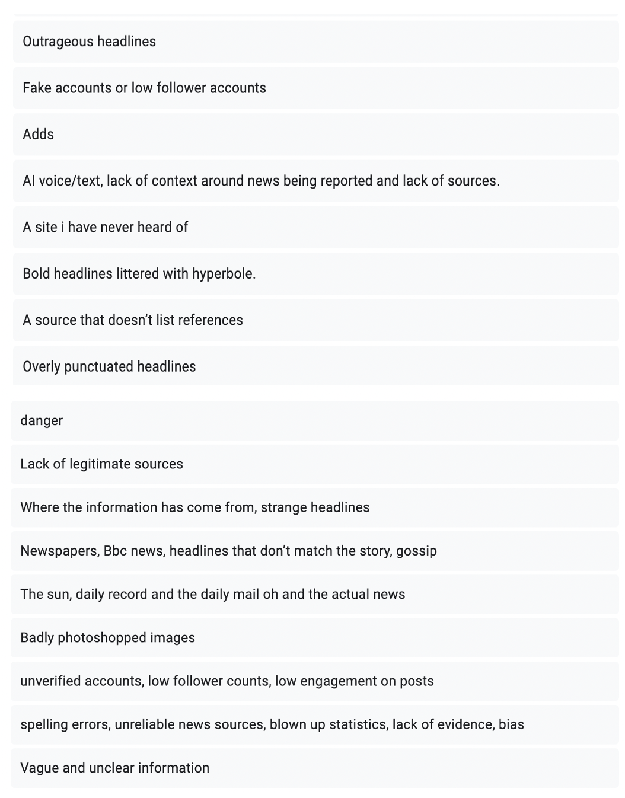

What Is Fake News?
The Oxford English Dictionary
"(OED)" defines fake news as
"News that conveys or incorporates false, fabricated, or deliberately misleading information, or that is characterized as or accused of doing so."
Fake news is designed to manipulate and deceive readers.
The circulation of fake news can be split into two categories: Misinformation and Disinformation .
Misinformation:
A lot of people may unintentionally facilitate the spread of fake news through unknowingly sharing fake news via social media, word-of-mouth, etc. This is classed as misinformation as the distribution of fake news is accidental.
Disinformation:
On the other hand, people may intentionally spread fake news via the same channels in order to influence, deceive and manipulate. Hence, this is classed as disinformation as the distribution of fake news is purposeful.
A Brief History...
According to the Oxford English Dictionary (OED), the earliest use of the term 'fake news' was in 1890 when the practice of faking news stories was widely discussed. However, in the late 19th and 20th century people did not have access to the same mediums of information that is available today, thus the term was some what infrequently used and understood in comparison to today.
In modern society, while the concept of fake news is not a new one, the term 'fake news' was widely popularised in the 2016 US presidential election. During this time, the term 'fake news' had satirical connotations as it became the infamous tagline of the US Republican Party's presidential candidate, Donald Trump. From this point on, the term 'fake news' has almost been sensationalised due to its links to the 45th President of The United States of America, however the foundations of the term have always remained in reference to the faking of news stories to manipulate readers. Arguably, the overuse of the term during this period has brought the concept of fake news to the forefronts of our minds where it has remained ever since due to the prevalence of fake news, especially online.
Research
To gain a better understanding of where users within the targeted audience stand in reltion to fake news, original research was carried out in the form of a user survey where people were asked to answer a multitude of questions, with some regarding fake news.
The age range for this survey was in conjunction to the target audience for this website.

Users were then asked through which medium were they most likely to consume information, to which 82.4% answered social media.

In predicting the above answer, users were then asked how likely they were to pass on information they had read online. While results varied, the general consensus was that, yes, people were likely to not only read information they come across on social media, but they would also likely discuss what they had read with others.

Users were also asked out of 5, to rate how confident they are in their ability to recognise a source or fake news. Results showed that this ability varied, but the majority of users were not 100% confident, leaving room for improvement.

The final question users were asked to respond to in relation to fake news was to list some characteristics they would associate with a fake news source. Most responses correctly stated visual indicators like blown up headlines and photoshopped images as main indicators. All of the responses to this question are included below.

Survey Analysis
All of the responses gathered are indicative as to why fake news is such an issue. It proves that young people in today's society mostly get news from social media, while most are not totally confident that they can recognise a source of fake news. The results of the survey also correlate to research carried out by Maria Jervelycke Belfrage and Annika Bergström in 2018, which found that:
“Social networks are definitely emerging as spaces where deliberate and incidental news consumption coexist. It is also clear that the news shared in young persons’ feeds serves to widen their scope of information, in that they unintentionally come across news items they would have missed out on, had it been relegated to traditional platforms.”
While the results of the survey carried out for the purpose of this website showed that participants could pick out certain characteristics that would indicate the news source they have come across may not be reliable, the unintentional way they could come across these news sources cements them as just a part of every day life; just as social media is for the younger generation today. This highlights the prevalence of fake news that circulates today and reaffirms the fact that everyone has come across it and experienced a source of fake news whether they are aware of it or not.
(link to study:) "Maria Jervelycke Belfrage, & Annika Bergström. 2018. ‘News in Social Media: Incidental Consumption and the role of opinion leaders’, Digital Journalism, Vol 6 (5)pp. 581-598 "

« Previous
Next »